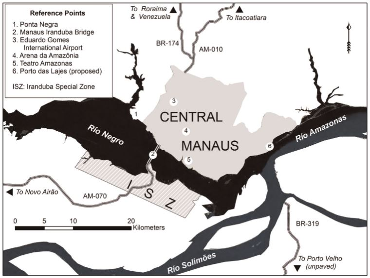
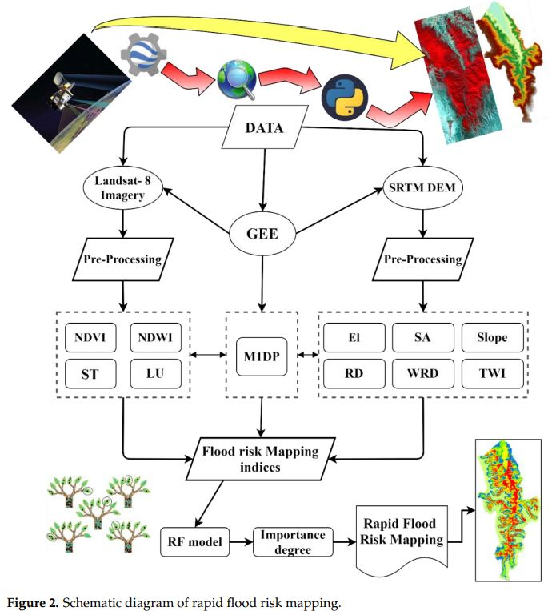

4 Policy Application
4.1 Summary
Under the demand for urban development and phenomenon of urban agglomerations, the Manaus Metropolitan Region (Região Metropolitana de Manaus or RMM) policy was proposed on May 30, 2007 in Brazil, which the metroplitan region is located at the center of the Amazon biome and developed with infrastructure that connects surrounding regions (Santos et al. 2022). According to Kanai (2014), the policy comprises a three-legged entrepreneurial strategy to reconcile the Manaus Free Trade Zone and construct the Amazonian Capital as a global city-region. On the other hand, with rising concern of the conservation of Amazon rainforest, Amazonas also developed ecological entrepreneurialism and passed state legislation on climate change, such as promoting high-profile conservation programmes. An examples is the Amazon Region Protected Areas (ARPA) program established in 2002 for conservation of tropical forests and preservation of biodiversity (Foster 2022).
Among all infrastructure, the Manaus–Iranduba Bridge is an significant development landmark that influence the territoral expansion pattern, where economic activities are located at the hyper-modern area in central Manaus and separate the south bank from economic development (Kanai 2014).

Referencing to the previous Amazonas programmes like Manaus’ Igarapé Social and Environmental Restoration Programme (PROSAMIM), Kanai (2014) indicated that sanitising environmentally sensitive areas and focusing development in central area had led to several shortcomings:
1. Fail to adapt Manaus’ unique ecology and artificially modify landscape, causing an increase in flood risk along intervened waterways
2. Fail to eradicate water pollution and sedimentation from bayou beds, causing pollution of water source from flood
4.2 Application
Based on the mentioned shortcomings, there is a necessity on monitoring how the central area development impact surrounding landscape. Remote sensing can be applied in this context for monitoring environmental impact of the urban growth and assisting policy making regarding the conservation of Amazon tropical forests. Three approaches are proposed below that apply remote sensing imagery in estimating flood risk, sediment concentration and water pollution:
1. Flood Risk Mapping
Study by Farhadi and Najafzadeh (2021) applied remote sensing data with random forest technique to obtain the flood risk indices for the Galikesh River basin, Northern Iran. Landsat 8 satellite imagery and Shuttle Radar Topography Mission (SRTM) Digital Elevation Model (DEM) are used to generate indices respectively in Google Earth Engine, then normalised indices are used as input in random forest to compute the importance degree of each index and is used to produce a flood hazard map. Landsat 8 satellite images are used to generate four indices: NDVI, NDWI, ST, and LU, while SRTM DEM model is used to produce six indices: Sl, SA, El, RD, WRD, and TWI. This study concern a wide range of possible factors that can lead to flood by calculating 11 indices and estimate their contribution to the flood risk, such as elevation, slope, river distance and soil texture. Data from passive and active sensors are utilised efficiently to obtain environment information from their spectral significance.

Suspended-Sediment Concentration (SSC)
In this study, Pereira et al. (2018) proposed a method to measure suspended-sediment concentration (SSC) and turbidity along the Middle Mississippi River (MMR) and lower Missouri River (MOR), which can be applied for sediment-related problems include both sediment deficits and surpluses. Satellite imagery is a great resources for studying SSC as it can record the sediment-water reflectance from the reflection from sediment-water mixtures in fluvial networks. From Landsat imagery, image filtering is used to remove the impact of cirrus clouds and cloud shadows, then average surface reflectance and standard deviation for each image are calculated. Result is validated by the available turbidity and SSC data from USGS National Water Information System (NWIS) database through stepwise regression technique. Findings in this study demonstrate the possibility of using sediment-water reflectance for monitoring sedimentation in water. SSC provide a clear interpretation as the spectral signal of SSC-water mixture will have different spectral interaction under different water condition.
Water Pollution Assessment
Remote sensing satellite imagery can also be used for deriving spatial and temporal trajectories of land cover/land use change (LCLUC) and combine with hydrological modeling to identify areas prone to high risk of soil erosion and water quality deterioration (Jordan, Ghulam, and Hartling 2014). This study first perform land-cover classification on corrected imagery with unsupervised clustering classification method, then calculate the NDVI with respect to different time interval and yearly trend. After evaluating the temporal changes of NDVI, parameters are applied to physically based distributed watershed model to simulate the impacts of land use and land management practices on water, sediments and chemical yields in surface water. By integrating the land use changes with NDVI analysis and SWAR hydrological modeling, this method can reveal how total suspended sediment is related to precipitation and land use change. Another interesting finding from the analysis is that NDVI is shown to be a potential indicator to predict the spatial distribution of total suspended sediment loading rate.
4.3 Reflection
The above case study on Manaus Metropolitan Region in Amazon biome presented that remote sensing can be utilised in policy design by providing data on monitoring and evaluation of environmental issues. Remote sensing can be a great indicator to visualise and quantify the environmental impact of urban sprawl and evaluate the effectiveness of conservation programmes. In addition, apart from showing the general picture on the real-world situation, the resulted application may also reveal local patterns, like using the flood risk mapping to identify section of river that has the severe impact from urban development.
A possible difficulty in implementing remote sensing imagery in analysing environmental issues is the research may require external data for extra information and validation. The mentioned approaches also adopted data from field measurements to support the analysis process and increase the comprehensiveness of study, which the database may not be available in every country. In overall, considering the cost-effectiveness and achievable analysis from indices, remote sensing is an ideal method for environmental impact assessment.